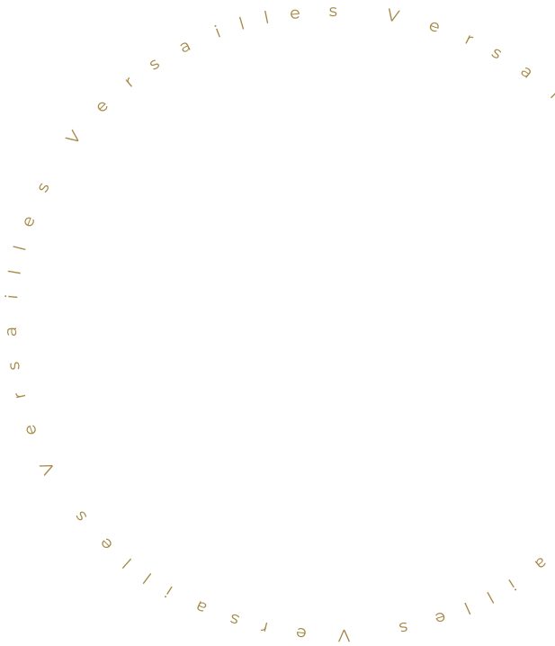
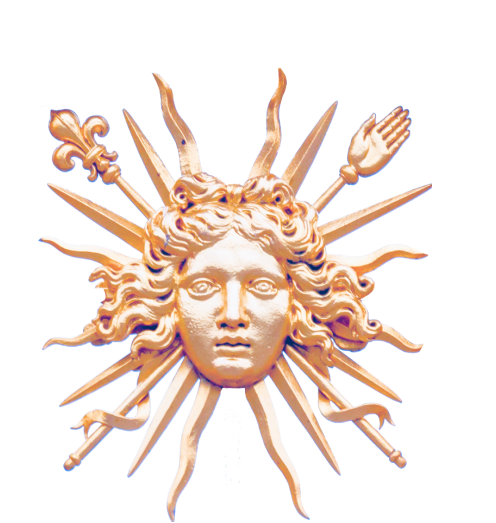
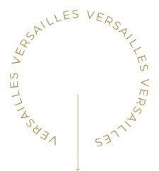
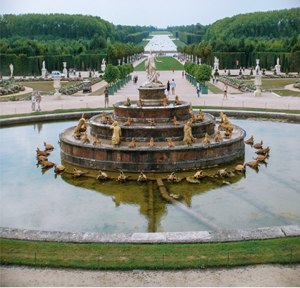
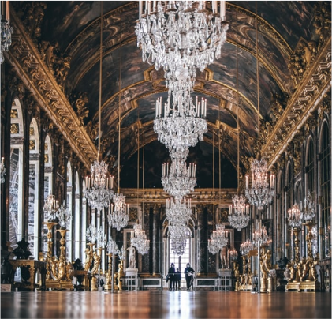
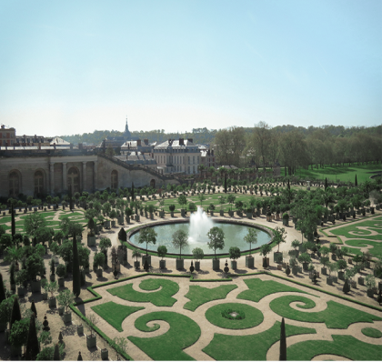

“Versailles est à mi-chemin entre deux extrêmes, Port-Royal et le Petit Trianon : la tension et la
légèreté.”
Emile Henriot


Découvrez Versailles
Le château de Versailles, dont les origines remontent au XVIIe siècle, a été successivement un relais de
chasse, un lieu d’exercice du pouvoir et dès le XIXe siècle un musée. Composé du Parc et des jardins ainsi
que des châteaux de Trianon, il s’étend sur 800 hectares.


Le DOMAINE
Le domaine de Versailles, d'une superficie de 800 hectares, comprend des palais, des jardins, des parcs,
le domaine de Trianondom y est situé - au palais, où les rois de Versailles se reposaient de l'étiquette
de cour.
Le palais et le parc ont été inscrits sur la liste du patrimoine mondial de l'UNESCO
en 1979.
Le Chateau
Ce palais a une histoire riche, car pendant de nombreux siècles, il a servi de résidence aux rois. En
arrivant ici, les amoureux du passé sont plongés dans l'atmosphère de luxe et de raffinement,
caractéristique de la vie royale des XVIIe et XVIIIe siècles.


LE JArdin
Les jardins de Versailles sont parmi les plus grands et les plus impressionnants du monde. Il y a 372
statues, 55 réservoirs, 600 fontaines et plus de 30 km de conduites d'eau. Au fil des ans, des milliers
de plantes et d'arbres ont été plantés dans les jardins de Versailles.